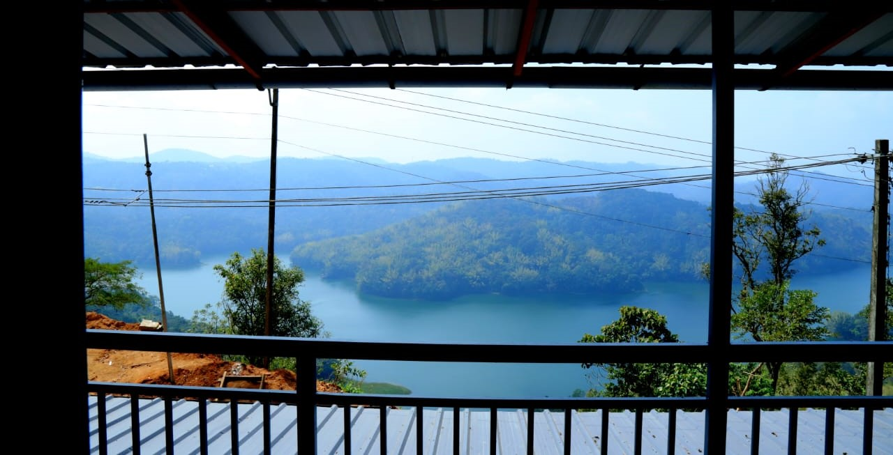

Our Story
Berlin Homestay was born out of a love for nature, hospitality, and Kerala's rich cultural heritage. Located at one of the most serene viewpoints in Idukki, our homestay is designed to offer both comfort and a touch of international elegance, reflecting the charm of Kerala’s picturesque surroundings while offering a truly welcoming environment for travelers.
We believe in creating memorable experiences, where guests can relax, recharge, and enjoy the beauty of nature. With our emphasis on warm Kerala hospitality, you’ll feel right at home as you experience the best of the region’s tranquil ambiance.
